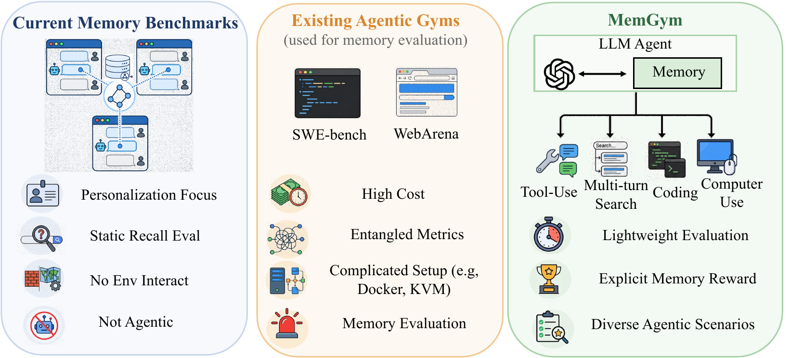
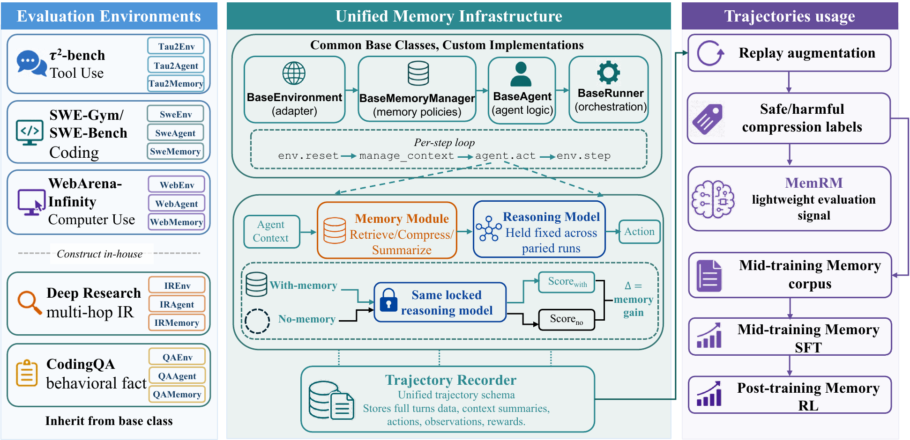
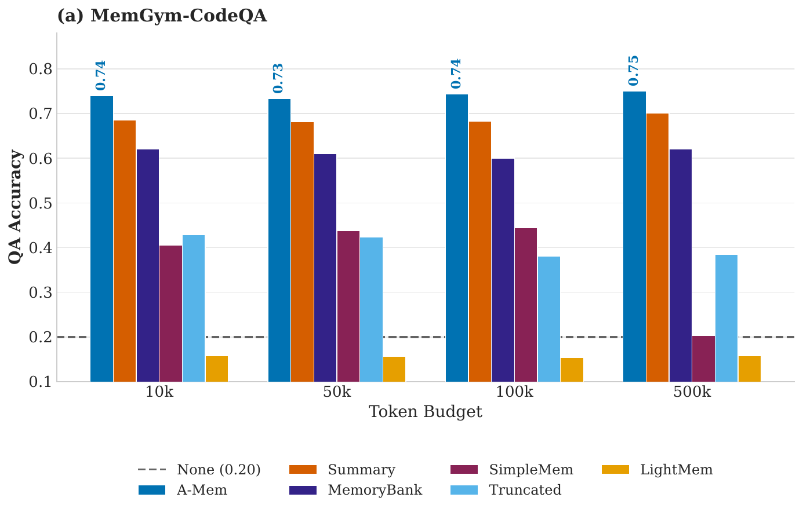
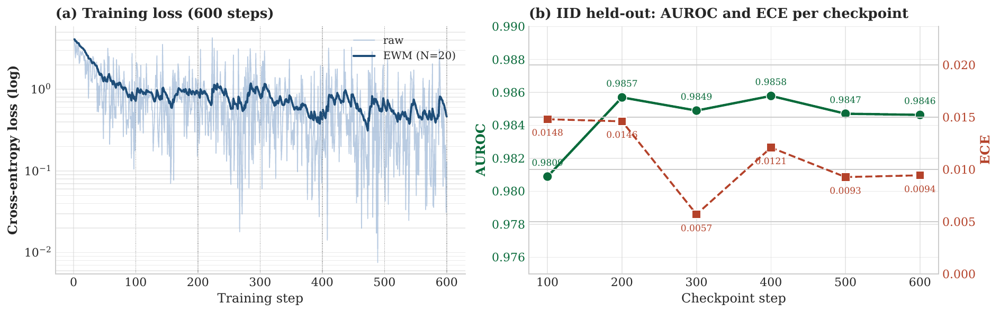

MemGym
a Long-Horizon Memory Environment for LLM Agents
1Rutgers University · 2Capital One · 3Princeton University
Abstract
Memory is a central capability for LLM agents operating across long-horizon tasks. Existing memory benchmarks predominantly evaluate retention of personalized information in multi-turn chat scenarios, overlooking the dynamic memory formation that occurs during extended agent execution. Consequently, the memory systems they produce transfer poorly to realistic agentic environments such as coding and web navigation.
We present MemGym, a benchmark for agentic memory that unifies existing agent gyms and in-house memory-grounded pipelines behind one memory–reasoning interface. MemGym spans five evaluation tracks grouped into four agentic regimes: tool-use dialogue (τ²-bench), multi-turn deep-research search (MemGym-DR), coding (SWE-Gym and MemGym-CodeQA), and computer use (WebArena-Infinity). MemGym reports memory-isolated scores that decouple memory performance from reasoning, retrieval, and tool-use ability, so memory strategies can be ranked without those confounders.
Our synthetic pipelines for MemGym-CodeQA and MemGym-DR are length-controllable, ablation-verified at every stage, and tightly aligned with downstream scenarios. To make evaluation on coding environments academically tractable, we train MemRM, a lightweight reward model (Qwen3-1.7B fine-tuned with QLoRA) that scores compression quality as a fast scalar read in place of full Docker rollouts. We release MemGym, MemRM, the labeled paired-trajectory corpus, and all pipeline code as open infrastructure.

on SWE-Gym IID
on τ²-bench (Haiku 4.5)
on SWE-Gym, neutral resolve rate
How it works

Five environments share a memory module that wraps the prompt to the policy LLM, so the same strategy runs on any environment unchanged. The wrapper exposes a single contract for compress, recall, and write, while the policy stays unaware.
Trajectories feed a replay-augmentation pipeline that produces
SAFE and HARMFUL labels for
MemRM — turning a multi-minute Docker rollout into a sub-second classifier call when
you iterate on strategies.
MemGym-DR and MemGym-CodeQA come from in-house synthetic pipelines that are length-controllable and ablation-verified, so the memory channel (not parametric recall or distractors) is what's being measured.
Leaderboard
Results across all five evaluation tracks. Each row is paired with a same-reasoner,
no-memory baseline (italic, pinned to the bottom of its group) so the Δ column reports
memory-isolated gain, not absolute task performance. This page reads
data/leaderboard.json at load time —
appending a row to that file is all it takes to publish a new result.
Synthetic pipelines & MemRM training


Citation
If you use MemGym in your work, please cite:
@misc{memgym2026,
title = {MemGym: a Long-Horizon Memory Environment for LLM Agents},
author = {Xu, Wujiang and [Co-authors TBD]},
year = {2026},
note = {NeurIPS 2026 submission},
url = {https://github.com/WujiangXu/MemGym}
}